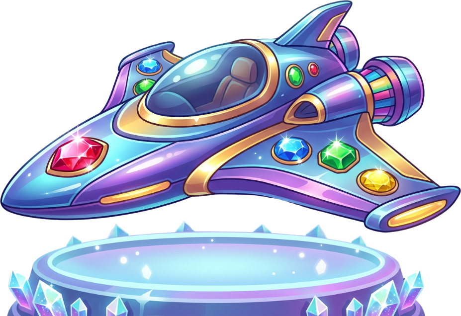
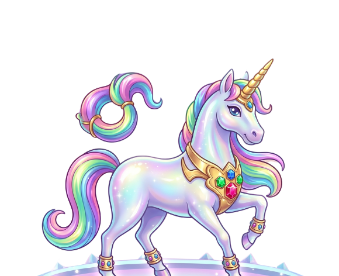
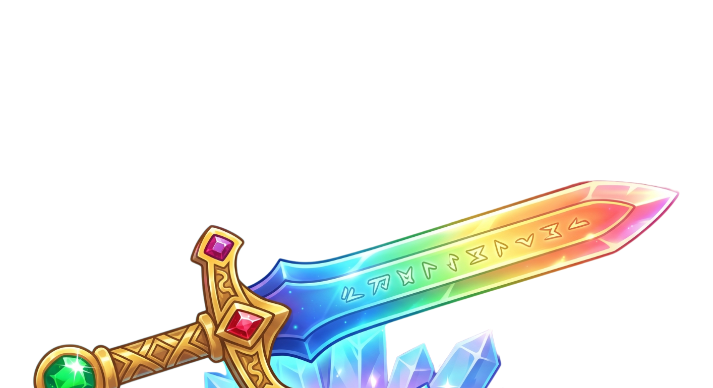

0
📖 おたから図鑑
🔑 ひみつのあいことば
クラスの もくひょうを たっせいすると、先生が おしえてくれるよ！
📝 まちがえた もんだい
⚙️ ひみつの呪文（九九）
先生から おしえてもらった「九九のじゅもん」を いれると、その段が つかえるようになるよ！
📚 なにに ちょうせんする？
✏️ にゅうりょく モードを えらぼう！
🎒 アイテムをつかう？
💎 ジュエルショップ
0





 ⭐
⚙️
✨
⭐
⚙️
✨
18 - 5 = ?
もんだい 1/10
0
0
どっちに すすむ？
◀
▶
⏱️1:00
？


⏱️ タイムアタック きろくしょう
きろく
0問せいかい！！
💎 ゲットしたジュエル：0
📸 このがめんを スクリーンショットして、せんせいに おくろう！